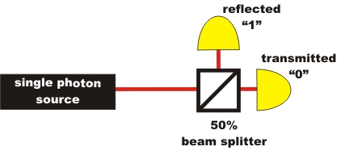
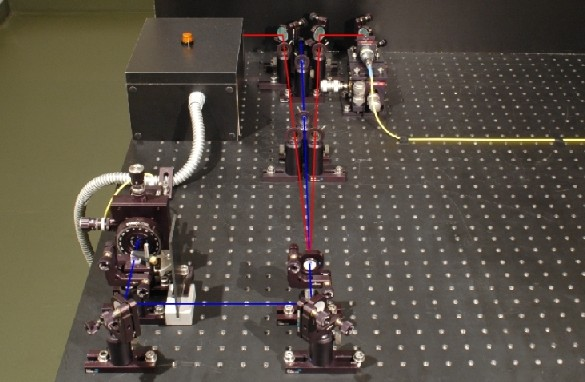
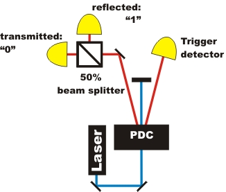

Quantum Randomness Chapter 1:
Quantum Randomness Generator
The random process at the beam splitter happens in the form of unpredictable transmission or reflection of a single photon. On the following page, the quantum randomness generator is presented separately and together with the announced single photon source.
Quantum randomness generator and photon pair source separated
For secondary level school lessons it is easier to explain the quantum randomness phenomenon by separating the single photon generation from the actual experiment (pic. 1). If the photon is transmitted at the beam splitter, the result is saved as a binary "0"; if the photon is reflected, the result is saved as a binary "1" (pic. 1). With binary numbers, random decimal numbers, random letters or random colours can be generated.

pic. 1: Quantum randomness generator separated from the announced single photon source
In the following experiment, you can play with a quantum die using single photons. Now where is the difference between the quantum die, a computer-programmed die and the real die from the games assortment? For the correct representation, you require the latest Flash-Player (Version 9 - Freeware) [Download].
Monitoring and explanation:
Quantum die: The single photon at the beam splitter decides completely at random whether it be reflected or transmitted. There is no mathematical rule (algorithm) behind this decision, or indeed any other principle. Quantum randomness is called pure and objective randomness.
Computer die: A computer creates randomness by a calculation. The basis for this calculation is a start value which rarely repeats itself. Such a start value could be, e. g. the current system time, or the current movement of the computer mouse. If the same start conditions are used for this mathematical rule, the "random" result is always the same. The "randomness" of the computer number therefore is only down to the complexity of the mathematical rule and to the start value. For this reason, computer-generated random numbers are called "pseudo-random"
Real die: With a real die from your games cupboard, you could predict the number by a calculation. For this calculation, all environmental conditions must be known in detail: From which height is the die thrown, in what manner exactly does the die leave your hand, what is the air friction, which features does the die material when hitting the table ... There are so many conditions to be taken into account that the calculation gets very complicated. In practice, this calculation cannot be carried out. Deterministic chaos is at work here: Randomness arises due to lack of information about the exact start conditions which determine this physical process. This type of randomness is called subjective randomness.Are the measurement results of quantum randomness really random in the end? Is there not a principle behind it after all? This is examined in the next chapter with various test methods.
Notice on separating the experiment:
In pic. 2 the single photon source separated from the real experiment can be seen. One of the photons (left branch) is used as a trigger. The other photon (right branch), is coupled into the yellow glass-fibre cable and then uncoupled from the glass-fibre cable again at the real experiment (pic. 1). It is only after the trigger has registered a photon that both detectors are activated after the beam splitter.

pic. 2: Announced single photon source by trigger detector
Left branch: Trigger detector. Right branch: Coupling into the glass-fibre cable
Quantum randomness generator with photon pair source
In the following experiment, the quantum randomness generator and the photon pair source are not separated (pic.3). The experiments quantum randomness generator and "Existence of the photon" only vary in the analysis of data. At the quantum randomness generator, it is no longer counted how many events occur per second, but which detector the single photon was registered by. If the photon is transmitted at the beam splitter, the result is saved as a binary "0", if it is reflected, the result is saved as a binary "1".

pic. 3: Setup of the quantum randomness generator
Original data from the experiment: binary quantum random numbers
To the next chapter: Test of randomness, quantum music according to Mozart, commercial systems [klick]
Back to overview [klick]
Autor: P. Bronner, Mai 2009
Translation: G. Murphy, June 2009